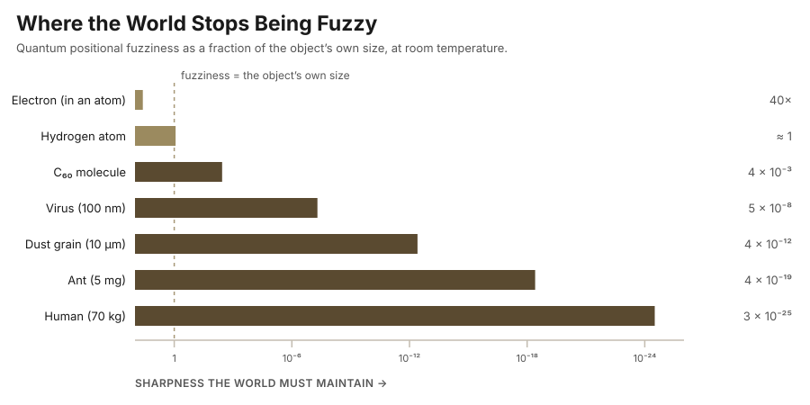

אלוהים הוא לא פראייר.
God is nobody’s fool.
— Hebrew saying
The phrase is normally used about moral accounting: nobody gets away with anything forever, the books eventually balance. I want to borrow it for something narrower and stranger — a claim about engineering. What follows is philosophy, not physics. It predicts nothing, forbids nothing, and would not survive contact with a referee or reviewer. It is a way of reading a piece of physics we already have, and it is offered in that spirit. I also want to say at the outset that nothing here depends on whether a god exists; “God” in this essay is a placeholder for whoever or whatever had to make the design decisions, and the argument reads the same if that turns out to be nobody at all.
Start with the two ends of the world, which behave in flatly different ways. At the bottom, matter is indeterminate. Heisenberg’s principle, stated in 1927, says that position and momentum cannot both be measured accurately: their uncertainties multiply to at least ħ/2. In everyday language: for small bodies (e.g., atoms, molecules, etc.), we cannot know both the location and the velocity at the same time. The standard modern reading — and the one the experiments have steadily reinforced — is not that we are clumsy measurers who disturb what we probe, but that there is no sharp pair of values sitting there waiting to be found. At the top (meaning, when we deal with large bodies), the world is stubbornly, boringly definite, i.e., we know almost certainly both the location and the velocity. A planet has a position. So does a bowling ball, an ant, a coffee cup. Nothing about ordinary objects is fuzzy, and the whole apparatus of classical mechanics works because of it.
The transition between these two regimes is not a matter of taste; it can be computed. Every object has a quantum positional fuzziness — its thermal de Broglie wavelength, λ = h/√(2πmkT) — which shrinks as the square root of mass. Every object also has a physical size, which grows as the cube root of mass. The two curves cross, and they cross in an interesting place. At room temperature, the mass at which a thing’s quantum fuzziness equals its own diameter is about 1.4 × 10−27 kg — within a factor of two of a single hydrogen atom.

That is the fact to be explained. Below one atom, the world is allowed to be vague about where things are. Above it, the vagueness collapses so fast that by the scale of a dust grain it is already a trillionth of the grain, and by the scale of a person it is twenty-five orders of magnitude below anything that could matter. Why should precision be rationed this way — lavish at the top, absent at the bottom? Or in other words: why do we not care about small parts, and care dearly about big bodies?
Here is where I want to ask the engineer’s question rather than the physicist’s. Suppose you had to maintain this world: keep it consistent, everywhere, for every particle, forever. Where would you cut corners? Anyone who has built a large simulation gives the same answer, because there is only one good answer: cut where nobody is looking. Real-time graphics engines have spent forty years refining exactly this instinct. You do not render what is off screen. You do not store the individual rocks on the distant mountain; you store a rule that will produce plausible rocks if somebody walks over there. You keep a coarse version of everything and a fine version of the few things being examined, and you swap between them at the moment of examination and not before. The whole art is deciding what can be left unresolved without anyone noticing.
Quantum indeterminacy has precisely this shape. The wavefunction is what quantum mechanics actually hands you in place of a particle: a spread-out mathematical wave defined over all the places the particle might be found, whose squared magnitude at each point gives the probability of finding it there. And the wavefunction is not a description of a definite position being hidden from us; it is a rule for producing a position should anyone insist on one. Superposition is the state of not having been resolved yet. Measurement is the call that forces resolution. And the randomness — the part that has bothered people since 1927, the part Einstein could not accept — is exactly what lossy storage looks like from the inside. If you keep a rule instead of a value, you can reproduce the statistics but not the individual answer. The answer was never kept. There is nothing to be faithful to.
And now the size dependence falls out on its own. Take one electron in an atom in a rock. Nobody depends on where it is. Neglect it entirely, replace it with a probability cloud, and nothing downstream notices — the chemistry still works, the rock still sits there, the ledger still balances. Now take the rock. Its position is load-bearing for everything it touches: what it occludes, what it presses on, what bounces off it, where its shadow lands, which of a billion other objects will collide with it in the next century. An error there does not stay local; it propagates, and it propagates into things that are being examined. So the world pays full precision for aggregates and pays essentially nothing for the individually irrelevant. It spends where it is watched. It is nobody’s fool.
The instinct behind this is not new, and it would be dishonest to present it as such. Konrad Zuse proposed in 1969 that the universe is literally a cellular automaton; Gerard ’t Hooft has spent years developing a deterministic, automaton-like substrate beneath quantum mechanics; and Nick Bostrom’s simulation argument (2003) is now the best-known member of the family — though it is worth remembering that Bostrom’s actual claim is a trilemma, not an assertion that we are simulated. Implementation Theory, as I am using the term, is more modest than any of these. It does not claim that we are inside a computer. It claims something weaker and, I think, more interesting: that quantum mechanics has the shape of a resource-bounded design, and that this shape is a fact about the physics whether or not anybody implemented it.
The shape is not merely a metaphor, either, because physics already has a budget line. The Bekenstein bound and the holographic principle say that the information a region of space can contain is finite, and — astonishingly — that it scales with the region’s surface area rather than its volume: about 1.4 × 1069 bits per square meter. That is the signature of a storage constraint, not of an unbounded continuum. Landauer’s principle adds a metered cost per operation: erasing one bit dissipates at least kT ln 2 of energy, which makes computation a physical expense rather than a free abstraction. A universe with a finite bit budget per unit area and a nonzero price per bit erased is a universe with an accountant.
Now the objections, of which there are three, and the second is serious.
The first is that physics already explains the small-to-large transition without invoking anyone’s parsimony. Decoherence — developed by Zeh, Joos, Zurek and others from the 1970s onward — shows that a large object entangles with its environment so rapidly that interference between its possible positions becomes unobservable almost instantly; for a dust grain in air the timescale is on the order of 10−36 seconds. Classicality is derived, not designed. This is entirely correct, and it is the reason the essay is philosophy rather than physics. But it answers a different question. Decoherence explains how the mechanism works; it does not explain why the world runs on a mechanism with this property rather than one without it. A program’s laziness is fully explicable from its interpreter, and remains a decision somebody made.
The second objection is the one that actually hurts: quantum mechanics is expensive, not cheap. Describing n interacting quantum particles takes on the order of 2n amplitudes; a few dozen of them will exhaust any classical supercomputer we can build, which is the entire reason quantum computers are interesting. If nature wanted a bargain, plain classical determinism would have been far cheaper. I do not think this can be waved away, and I would rather leave it standing than pretend otherwise. The two partial replies I find worth anything are these. First, that exponential cost is the cost of simulating quantum mechanics on a classical substrate; on a quantum substrate the state is simply the state, and the exponential lives in our translation rather than in the thing itself. Second, the thrift being claimed here is about committing to definite values, not about amplitude bookkeeping — and a definite value is precisely the kind of thing that must then be kept consistent with everything else, forever, at whatever precision anyone might later demand. Neither reply is decisive. The right posture is to hold the idea loosely.
The third objection is that a story which cannot lose is not a theory. Fair. There have been attempts to make this family of ideas testable: Beane, Davoudi and Savage pointed out that if the universe ran on a cubic spacetime lattice, the highest-energy cosmic rays should show a directional anisotropy near the GZK cutoff, an effect nobody has seen. Fermilab’s Holometer looked for the Planck-scale jitter predicted by one specific holographic-noise model and ruled it out. So far the searches have come back empty, which is why the honest label for this piece is “a possible reading,” despite the word theory in its name.
What survives all that is a way of looking. We are taught quantum mechanics as a catalogue of paradoxes — the cat, the two slits, the spooky action — and the pedagogy leaves the impression that the small scale is where the universe becomes incoherent. Turn the picture around and it reads as the opposite: the small scale is the one place where the universe is visibly economical, where it declines to keep books it will never be asked to produce. The fuzziness at the bottom is not a flaw in the image. It is the resolution the image was rendered at. Nothing is stored that nobody will check — and everything that gets checked, adds up.